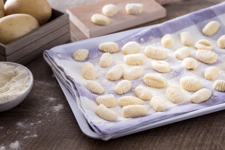

Gnocchi di patate

Gnocchi
Chi non ha mai affondato le mani in pasta per preparare queste morbide gemme di patate?
Ingredienti
- Patate rosse
- Uova
- Farina
- Sale q.b.
Preparazione
- Dal momento in cui l’acqua sarà a bollore contate circa 30-40 minuti,
- Aggiungete poi l’uovo leggermente battuto insieme a un pizzico di sale
- Ecc...